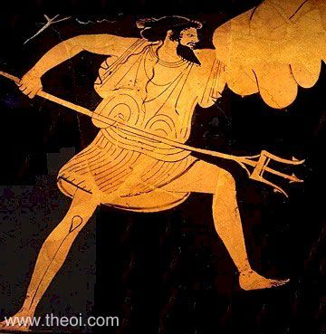
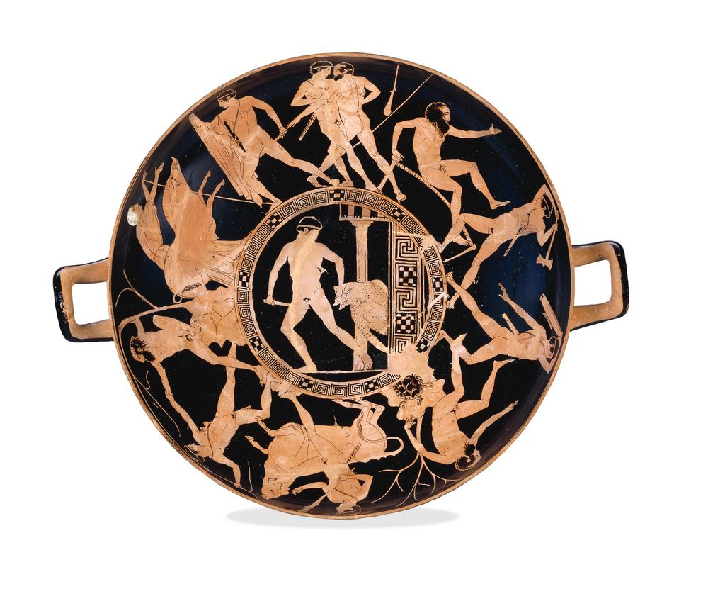
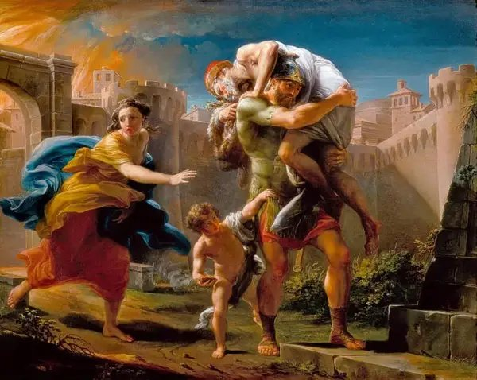

Greece and Rome — the naming of Athens, Theseus, Aeneas, Romulus & Remus, and the sources who recorded them
Greece
The naming of Athens — Athena and Poseidon
The contest
the story of Athens's naming does not survive in one definitive version — it has been reconstructed from several ancient sources
it was depicted on the western pediment of the Parthenon in the fifth century BC, recorded by the geographer Pausanias in the second century AD; the sculpture itself has not survived
when the legendary king Cecrops founded a city in Attica he needed a name for it
at this time gods travelled the land seeking cities to place their patronage on; both Athena and Poseidon came to claim the city
Poseidon arrived first and struck the centre of the Acropolis with his trident — from the hole, sea water sprang up view image

Poseidon · god of the sea
Athena arrived next and planted an olive treeview image
Athena · patron goddess of Athens
Zeus and Cecrops judged the contest: Poseidon's water was salt and largely unusable; Athena's olive was central to Greek life — as food, oil, and trade
Athena was judged the victor and named the city after herself — Athens
Why the myth mattered to the Athenians
the myth showed that Athens was chosen by a god — not just any god, but Athena, goddess of wisdom and war; the city had divine sanction for its existence
the olive tree was central to Athenian life and economy — the myth gave a divine origin to one of Athens's most important resources
the story explained why Athens bore Athena's name and why she was the city's patron goddess
the contest with Poseidon showed Athens was worth fighting over — two major Olympians competed for it; only one city could be chosen
the myth was displayed on the Parthenon's western pediment — a permanent, monumental statement of Athens's divine identity visible to all who approached the Acropolis
the Erechtheion (built 421 BC as part of Pericles's building programme) preserved the physical evidence of the contest: a well believed to be where Poseidon struck the rock, and a small walled garden containing the olive tree believed to have been planted by Athena; it also held the graves of the legendary kings Cecrops and Erechtheus view image
The Erechtheion · Acropolis, Athens
The contest between Athena and Poseidon did more than explain a name. It gave Athens a founding story rooted in divine competition — the city was not just built by humans, it was claimed by gods. The choice of Athena over Poseidon was also a statement of Athenian values: wisdom and the gifts of peacetime (the olive) were valued over raw power and the sea. For a city that prided itself on its intellectual and cultural achievements, this was exactly the right founding myth.
Exam focus
Describe the contest between Athena and Poseidon for the naming of Athens.
What did Athena do to win the contest, and why was this significant to the Athenians?
How was the myth of Athens's naming displayed in the city?
Why was it important to the Athenians that their city had been chosen by a god?
Greece
Theseus — birth and early life
The birth of Theseus
Aegeus, king of Athens, had visited the oracle at Delphi asking how to get an heir; the oracle gave a riddling response he could not interpret
on his way home Aegeus visited King Pittheus of Troezen, who realised the oracle meant Aegeus would conceive a son the next time he had sex; Pittheus got Aegeus drunk and arranged for him to sleep with his daughter Aethra
Aethra received a message from Athena in a dream to wade to the nearby island of Sphairia — there Poseidon emerged from the sea and coupled with her
the child she carried therefore had both human and divine characteristics — his mortal father was Aegeus, his divine father Poseidon
worried that Theseus's cousins in Athens would be jealous and kill him, Aegeus left Aethra in Troezen; before leaving he placed his sandals and sword under a rock, telling Aethra that if the boy was worthy to be his heir he would lift the rock and bring them to Athens
when Theseus came of age, Aethra led him to the rock; he lifted it easily and took the sandals and sword
he chose to travel to Athens by the dangerous land route rather than the safe sea route — inspired by his cousin Heracles's labours, he wanted to equal his achievements
Comparing Theseus and Heracles
like Heracles, Theseus was born of a mortal mother and divine father
like Heracles, he undertook a series of heroic labours before claiming his destiny
Plutarch noted that Theseus deliberately sought out the land route because he had long admired Heracles and wanted to prove himself equally heroic
Pittheus told Theseus that some of the villains on the land route had escaped Heracles's notice and had resumed their wicked ways — giving Theseus a purpose: to finish what his cousin had started
key difference: Heracles's labours were imposed on him as punishment; Theseus chose his challenges voluntarily
The birth story establishes Theseus as a hero in the same mould as Heracles — divine parentage, a destiny hidden until he proved himself worthy, a choice of the harder path. The rock and the sword are a test of character as much as strength: Theseus could have taken the easy sea route and arrived in Athens safely. He chose the land route because he wanted to earn his place. That choice is what makes him a hero rather than simply a prince.
Exam focus
Describe the birth of Theseus. Who were his two fathers?
What was the significance of the sandals and sword under the rock?
Why did Theseus choose the land route to Athens rather than the sea route?
Compare the birth of Theseus with the birth of Heracles. Give one similarity and one difference.
Greece
The labours of Theseus — the Kylix (prescribed source)
Prescribed source factsview kylix

Theseus & the Minotaur · kylix by the Codrus Painter · British Museum
Date: 440–430 BC
Style: red-figure pottery
Artist: the Codrus Painter
Current location: British Museum, London
Description: the central scene shows Theseus defeating the Minotaur; six further labours are shown around the outside — seven labours in total
Significance: the kylix shows seven of Theseus's labours and is one of our key visual sources for how the Athenians depicted their hero
Labour 1Sinis the Pine Bender
Sinis was a robber who tied victims to bent pine trees then released them, tearing them apart
Theseus either tricked Sinis into helping him bend a pine then let go, flinging Sinis to his death — or tied Sinis to two pines himself
on the kylix: Sinis is seated on a hilltop beside a tall pine tree; Theseus has seized him by the right arm and with the other hand draws down the top of the pine; Sinis has thrown one arm around the pine and presses his right foot against the rock
Labour 2The Crommyonian Sow
unlike the other labours, Theseus sought this one out voluntarily — to show he attacked not only in self-defence but could seek out danger in the nobler beasts
Plutarch offers an alternative version: the sow was actually a female thief nicknamed "Sow" for her beast-like behaviour; in both versions Theseus killed her
on the kylix: the sow springs upward against Theseus, who advances with sword drawn and left hand raised and wrapped in a mantle as a shield; beside the sow stands an old woman — probably Phaea (the Grey One) who reared the sow
Labour 3Sciron
Sciron sat on a path by a cliff's edge and asked passers-by to wash his feet; as they bent down he kicked them into the sea where they were consumed by a giant turtle
Theseus caught Sciron by the feet and threw him off the cliff
on the kylix: Theseus swings a footstool over his head to strike Sciron, who has fallen backwards on the hill; he is bald over the forehead with shaggy hair and beard; at the foot of the hill is a tortoise, half visible as if climbing out of the water
Labour 4Cercyon
Cercyon, king of Eleusis, challenged all passers-by to a wrestling match; the winner became king; Cercyon had killed all previous opponents
Theseus defeated Cercyon through skill rather than strength alone — Pausanias noted that Theseus was the first to discover the art of wrestling; before him wrestlers had relied only on size and strength
having defeated Cercyon, Theseus became king of Eleusis — but moved on to Athens
on the kylix: Theseus is pulling Cercyon's body towards him, ready to throw him backwards across his thighs; Cercyon's left arm hangs uselessly behind Theseus's back; a club and spear lean against the wall nearby
Labour 5Procrustes
Procrustes invited travellers to sleep on a "magical" bed that would fit anyone; if they were too short he stretched them with a mallet; if too tall he chopped off their feet and head
Theseus compelled Procrustes to lie on his own bed — then chopped off his head, making him suffer the same fate as his victims
on the kylix: Procrustes has fallen backwards on his bed, supporting himself with his right hand; with left hand and foot feebly raised he tries to ward off the blow; Theseus swings a double axe over his back
Labour 6The Bull of Marathon
when Theseus arrived in Athens he found his father under the control of the witch Medea; she recognised Theseus and arranged for him to prove himself by defeating the Bull of Marathon — the same bull Heracles had brought to Eurystheus as his seventh labour
Theseus mastered the bull easily and marched it through Athens before sacrificing it
Medea then arranged to have Theseus poisoned during the sacrifice; Theseus pulled out his father's sword to carve the meat — Aegeus immediately recognised it and knocked over the poison; he recognised Theseus as his heir in front of the citizens
on the kylix: Theseus rides the charging bull, with right leg supported against a rock and left knee pressed against the bull's shoulder; he throws his weight back on a cord fastened to the bull's horns
Labour 7The Minotaur (central scene)
as a consequence of his son Androgeus's death, Minos, king of Crete, demanded that Athens send seven boys and seven girls to be sacrificed to the Minotaur — a creature with a bull's head and human body, kept in the Labyrinth built by Daedalus
Theseus volunteered for the sacrifice; in Crete he met Ariadne, daughter of Minos, who fell in love with him and gave him a ball of wool (to navigate the Labyrinth) and a sword
Theseus killed the Minotaur and escaped the Labyrinth; Ariadne fled with him but was left on the island of Naxos — accounts differ as to why: he abandoned her for another woman; he was swept away by storms; or Athena told him in a dream that Dionysus had chosen Ariadne as his bride
on his return, Theseus forgot to change the black sail of grief to white — Aegeus, seeing the black sail, believed Theseus dead and threw himself from the city walls into the sea
on the kylix (central scene): Theseus, sword in right hand, moves to the left looking back, dragging the Minotaur by the left horn out of a building; the Minotaur has apparently fallen forward dying; only his head, right arm, and body to the waist are visible
What the kylix tells us
the kylix presents Theseus as a pan-Athenian hero — his labours are shown together as a connected sequence, mirroring the way Heracles's labours were shown on the Temple of Zeus metopes
the Minotaur scene at the centre is the most important — it is the labour most closely associated with Athens specifically, since it freed the city from its tribute to Crete
the kylix dates to 440–430 BC — the height of Athenian power under Pericles; depicting Theseus's labours at this moment was a statement about Athenian strength and identity
the red-figure style allowed for detailed, realistic depiction of each scene — the Codrus Painter used body position, setting, and props to make each labour instantly recognisable
a kylix was a drinking cup — these images would be seen at symposia (drinking parties) by Athens's educated elite; Theseus's labours were part of the cultural conversation of Athenian society
The kylix does for Theseus what the Temple of Zeus metopes did for Heracles — it presents the hero's labours as a coherent series of achievements that define his character and his city. But there is a key difference: the Minotaur labour, placed at the centre, is specifically Athenian. Heracles's labours were pan-Hellenic — they belonged to all Greeks. Theseus's labours culminate in freeing Athens from its humiliating tribute to Crete. The kylix is not just a celebration of heroism — it is a statement of Athenian pride.
Exam focus
Describe any two of the labours of Theseus as shown on the kylix.
Which of Theseus's labours is shown at the centre of the kylix, and why do you think the artist chose to place it there?
What does the kylix tell us about how the Athenians viewed Theseus?
Compare the kylix showing Theseus's labours with the metopes of the Temple of Zeus showing Heracles's labours. Give one similarity and one difference.
Greece
Theseus as king — reforms and legacy
Theseus as reformer
Theseus did not found Athens — but as its king he united Attica under Athenian political leadership, which was his greatest achievement
Attica was made up of many small, warring towns; Theseus travelled to each and negotiated their allegiance to Athens
he won them over by promising democracy — they would not be ruled by a king but would vote for their leaders; Theseus would be commander in war and keeper of the laws, but in all else they would be equal
to cement Athens as the centre of the alliance he destroyed all the town halls and council chambers in the smaller towns and built a new council chamber and town hall in Athens
he founded the Panathenaic Games to unite the religions of the area — all Athenians could contest and represent their tribe
Death and legacy
after his death, Plutarch records that the Athenians honoured Theseus as a demi-god
many who fought at the Battle of Marathon (490 BC) believed they saw an apparition of Theseus in arms rushing ahead of them against the Persians
his tomb in the heart of Athens became a sanctuary and place of refuge for runaway slaves and men of low estate — because Theseus had been a champion of the poor and needy during his life
Plutarch states he was buried near the gymnasium in the heart of the city — not on the outskirts, but at the centre of Athenian life
Theseus's greatest achievement was not any single labour but the political act of uniting Attica. Heracles was a stronger fighter; Theseus was a better king. By founding democracy and making all citizens equal, he gave Athens the political identity that defined it for centuries. The vision of Theseus at Marathon shows how deeply embedded he was in Athenian civic consciousness — centuries after his mythological lifetime, soldiers still believed he fought alongside them. His tomb as a refuge for the powerless shows the other side of his legacy: Athens valued not just strength but justice.
Exam focus
What reforms did Theseus introduce as king of Athens?
Why was the founding of democracy important to Athens's identity?
What does the vision of Theseus at Marathon tell us about his importance to the Athenians?
Why was Theseus important to Athens even though he did not found the city?
Rome
Livy as a source — prescribed source
Prescribed source facts
Author: Titus Livius (Livy)
Born: 64 BC or 59 BC in Padua, northern Italy
Genre: history
Work: The Early History of Rome — a history of Rome from its foundation
Significance: Livy tells the history of Rome from Aeneas to Romulus; his account is our main source for Rome's founding myths
Date of writing: believed to have started around 24 BC — during the reign of Augustus
Livy's context
Livy lived through one of the most turbulent periods in Roman history — the civil wars between Julius Caesar and Pompey, Caesar's assassination, the rise of Octavian (Augustus), and the establishment of the Empire
he began writing his History of Rome in the 20s BC — just as Augustus was establishing his rule and promoting a golden age of Roman culture and literature
unlike many Romans of his social status, Livy did not pursue a political career — he devoted his life entirely to his literary work
he was aware that he was writing about events over 700 years in the past and admitted the difficulty of this openly
Weaknesses of Livy as a source
Livy himself acknowledged the problem: much of Rome was destroyed when sacked by the Gauls in 386 BC, meaning many written records were lost
many of Rome's founding legends were oral traditions — passed down by word of mouth and therefore subject to adaptation and manipulation over time
Livy saw no need to separate fact from fiction, writing: "This indulgence is granted to the ancients; by mixing human actions with divine ones, they might make the origins of cities more sacred"
he admitted his subject involved looking back over more than 700 years and that he could not confirm or deny traditions from before the city was founded
he used the sources available to him but did not always cite them — we cannot always know where his information came from
Livy was writing during the reign of Augustus, whose family claimed descent from Aeneas — this may have influenced how he presented the founding myths
Why Livy is still valuable
despite its limitations, Livy's account is our most detailed surviving source for Rome's founding myths
he was aware of the problems with his sources and said so openly — his honesty about uncertainty makes him more trustworthy than a writer who presented myth as fact without question
he preserves multiple versions of events where they existed — showing the fluidity of the tradition rather than forcing one definitive account
his work reflects what educated Romans in the first century BC believed and valued about their city's origins — historically significant in itself
Livy is an unusual source because he tells you his own weaknesses. He admits the records were lost, the traditions were oral, and that ancient writers mixed human and divine without embarrassment. That honesty is itself valuable — it tells us that even in antiquity, educated Romans knew their founding myths were not straightforward history. What Livy gives us is not a factual account of Rome's origins but a record of what Rome chose to believe about itself, written at the precise moment when Augustus was using those beliefs to legitimise his own rule.
Exam focus
Give two weaknesses of Livy as a source for the founding of Rome.
Why is Livy still a valuable source despite its limitations?
What does Livy's admission that he cannot separate fact from fiction tell us about Roman founding myths?
How might the reign of Augustus have influenced Livy's account?
Rome
Aeneas — birth, Troy, and the wanderings
The birth of Aeneas
Venus (Aphrodite) boasted to the gods that she had persuaded them to sleep with mortal women; as punishment, Jupiter placed in her heart the desire for a mortal man
travelling to Troy, Venus met Anchises, a mortal man described as rivalling the beauty of the gods; she disguised herself as a mortal woman and slept with him
in the morning she revealed herself and told Anchises their son would be called Aeneas — "because my anguish was so dreadful that I fell into the bed of a mortal man"
Aeneas was therefore the son of a mortal man and a goddess — like Theseus and Heracles before him
Aeneas and the fall of Troy
Aeneas grew up in Troy and became a fierce warrior; he is mentioned throughout Homer's Iliad as both a brave soldier and loved by the gods
after ten years of fighting, the Greeks were unable to defeat Troy; Odysseus devised the wooden horse — filled with Greek soldiers, wheeled to Troy's gates, and brought inside by the Trojans as a peace offering
at night the Greeks crept out, opened the city gates, and sacked the city; they killed the Trojan king Priam and burned Troy
Aeneas fled the city carrying his elderly father Anchises on his back, holding his son Ascanius by the hand, and bringing the public Penates (sacred objects of the city) with him view image

Aeneas fleeing Troy, carrying his father Anchises
in the confusion he lost his wife Creusa; she later appeared to him as a ghost — she had been killed by the Greeks
what it tells us: the image of Aeneas carrying his father, leading his son, and rescuing the city's sacred objects became the defining picture of pietas — the moment that made him a hero Romans wanted to claim as their own
The wanderings of Aeneas
Aeneas travelled across the Aegean Sea to Macedon, from Macedon to Sicily, and finally from Sicily to the west coast of Italy
throughout his journey Aeneas demonstrated pietas — a Roman virtue encompassing respect for family, gods, and city; it goes beyond modern "piety" to mean a complete sense of duty
arriving in Italy Aeneas fought a huge war with a local tribe; after winning he made peace with King Latinus of Latium and married his daughter Lavinia, founding a new city named after her
he had a son called Ascanius — Livy notes a complication: Aeneas already had a son called Ascanius by his first wife Creusa; this may have been a second son or a confusion in the sources
after Aeneas died his son took control of Lavinium; due to gradual expansion, Ascanius founded a new city called Alba Longa — which spawned the line of kings that culminated in Romulus and Remus
Aeneas is defined by pietas above all else. Where Heracles is defined by strength and Theseus by intelligence, Aeneas is defined by duty — to his father (carried on his back from burning Troy), to his son (led by the hand through the chaos), to his gods (the Penates carried into exile), and to his city (even a city that no longer existed). This made him the perfect Roman hero — not a lone warrior seeking glory, but a man whose heroism consisted entirely of responsibility to others.
Exam focus
Describe the birth of Aeneas. How did it compare to the birth of Theseus or Heracles?
What happened to Aeneas during and after the fall of Troy?
What is pietas, and how did Aeneas demonstrate it?
What was the connection between Aeneas and the founding of Rome?
Rome
Aeneas — importance to Rome
Why Aeneas mattered
Aeneas did not found Rome — Livy is clear about this; Rome was founded by Romulus generations later
his importance was dynastic and ideological — he provided Rome with a divine founding lineage and a set of values
Aeneas was the son of Venus — meaning the Roman race was literally descended from a goddess
the Caesars traced their family lineage back to Aeneas to legitimise their right to rule; Augustus was the nephew and adopted son of Julius Caesar and therefore claimed descent from Aeneas and through him from Venus
Livy and Virgil both wrote about Aeneas between 28 BC and 19 BC — precisely when Augustus was establishing his rule; the timing was not coincidental
Virgil's Aeneid presented Aeneas's journey as a Roman foundation epic to rival Homer — Aeneas as a Roman Odysseus, his journey explained and justified by divine will
the public Penates that Aeneas carried from Troy were preserved in Rome and looked after by the Vestal Virgins — a living connection between Rome and its Trojan origins
pietas as a Roman virtue — the quality Aeneas embodied above all others — became central to Roman identity and the image Augustus projected of himself as a dutiful, pious leader
Aeneas was politically useful in a way that Romulus was not. Romulus was a founder, but he was also a fratricide — he killed his own brother. Aeneas was untainted by that kind of violence; his story was one of loss, duty, and perseverance. Augustus needed a founder figure who embodied Roman virtues without moral complications, and Aeneas provided exactly that. By tracing his lineage to Aeneas and through him to Venus, Augustus was not just claiming noble ancestry — he was claiming that Rome's imperial destiny had been divinely ordained from the moment Troy fell.
Exam focus
Why was Aeneas important to Rome even though he did not found the city?
How did Augustus use the myth of Aeneas to legitimise his rule?
What is pietas, and why was it important to the Roman identity that Aeneas embodied it?
Why did Livy and Virgil both write about Aeneas during the reign of Augustus?
Rome
Romulus and Remus — the founding of Rome
Background — from Aeneas to Romulus
after Aeneas died, his son controlled Lavinium; Ascanius then founded Alba Longa as Lavinium became overcrowded
Alba Longa produced a line of kings; the grandfather of Romulus and Remus was King Numitor, who was supplanted by his brother Amulius
to secure his throne, Amulius forced Numitor's daughter Rhea Silvia to become a Vestal Virgin — ensuring she could have no heirs who might challenge his rule
despite this, Mars came to Rhea Silvia and she conceived twin sons — Romulus and Remus
Amulius tried to have the twins killed; they were placed in a basket and thrown into the river Tiber
the basket came to rest at the foot of the Palatine Hill; a she-wolf found and suckled them; they were later discovered by a shepherd called Faustulus who raised them view she-wolf
The Capitoline She-Wolf with Romulus & Remus
what it tells us: the twins' survival against impossible odds — the river, the wolf, the shepherd — marks them out from birth as destined; Rome's founders were saved by nature itself when men tried to kill them
Romulus and Remus take revenge
when they came of age, Romulus and Remus killed Amulius and returned the city to their grandfather Numitor
rather than stay in Alba Longa, the twins decided to found a new city — Alba Longa had become overcrowded, as Lavinium had before it
they shared the same ambitious, warlike character as their uncles — Livy notes this as a problem, since both wanted to lead and neither would submit to the other
The founding of Rome
unable to agree on who should lead or where the city should be built, Romulus and Remus decided to consult augurs — reading the flight of birds to determine the will of the gods
Romulus took the Palatine Hill as his place of observation; Remus took the Aventine Hill
Remus saw six vultures first; just as this was reported, Romulus saw twelve — twice as many
each side claimed victory: Remus's followers argued he had seen the omen first; Romulus's argued his number was greater
the dispute turned from verbal conflict to violence — Remus was killed in the struggle; Livy gives this as the result of the conflict without specifying who struck the blow
Romulus gained sole power; the city was established and took his name — Rome
Romulus became Rome's first king; he was later deified and worshipped as the god Quirinus
The death of Remus is the most uncomfortable moment in Rome's founding story — the city was literally built on fratricide. Livy does not dwell on it, moving quickly past the killing to focus on Romulus's establishment of the city. But the detail cannot be ignored: Rome's founder killed his own twin brother. The Romans seem to have accepted this as the price of unity — one city, one leader, one name. The augury scene is also significant: the founding of Rome was not a human decision but a divine one, settled by the gods through the flight of birds.
Exam focus
How were Romulus and Remus born, and how did they survive?
How did Romulus and Remus decide who would found the new city?
What happened to Remus, and why is this significant?
What does the role of the augurs in the founding of Rome tell us about Roman religion?
Rome
Aeneas or Romulus — who was more important to Rome?
The case for Aeneas
Aeneas provided Rome with its divine lineage — as son of Venus, the Roman race was literally descended from a goddess; no other founding figure in the ancient world could claim this
he embodied pietas — the defining Roman virtue of duty to family, gods, and city; this made him the ideal model for Roman values across generations
Augustus traced his family directly to Aeneas to legitimise his rule — the most powerful man in the Roman world needed Aeneas more than he needed Romulus
Virgil's Aeneid — one of the greatest works of Latin literature — was written entirely around Aeneas; his story shaped Roman cultural identity for centuries
the public Penates Aeneas carried from Troy were preserved in Rome as a living connection to the city's origins — a tangible, religious link between Troy and Rome that Romulus could not provide
Aeneas's story explained why Rome was destined to rule — his journey was divinely ordained; the gods had planned Rome's greatness from the moment Troy fell
The case for Romulus
Romulus actually built Rome — he chose the site, drew the boundaries, named the city, and established its first institutions; Aeneas founded Lavinium, not Rome
he was Rome's first king — he created the political structure that Rome built on for centuries
he was the son of Mars, god of war — giving Rome a martial divine lineage that matched its military identity; for a city built on conquest, Mars was a more appropriate divine father than Venus
Romulus was deified after his death, worshipped as the god Quirinus — he became part of Rome's religious life in a way Aeneas did not
the story of Romulus and Remus — the she-wolf, the Tiber, the Palatine Hill — was the most widely known and depicted founding story in Rome; it appeared on coins, sculptures, and public monuments throughout the empire
the augury scene that decided Rome's name and location placed Romulus directly in communication with the gods — his founding of the city was divinely sanctioned
Reaching a judgement
For Aeneas: he was more important to Rome's identity and ideology — his divine lineage, his pietas, and his political usefulness to Augustus gave him a cultural weight that Romulus never matched; the Aeneid made him immortal in a way no story about Romulus achieved
For Romulus: he was more important to Rome's physical and political existence — without Romulus there is no city, no name, no king, no institutions; Aeneas founded a line, Romulus founded a city
A balanced conclusion: Aeneas was more important to what Rome thought it was; Romulus was more important to what Rome actually was; the answer depends on whether you measure importance by ideology or by institution
The Romans needed both figures and could not do without either. Aeneas gave Rome its divine origins, its connection to Troy, and its moral framework — pietas as the foundation of everything. Romulus gave Rome its name, its site, its first king, and its martial identity. Augustus understood this: he claimed descent from Aeneas for divine legitimacy, but he also rebuilt the temple of Quirinus (the deified Romulus) and used the image of the she-wolf on his coinage. Rome's founding required both a man of duty and a man of action — and conveniently, the myths provided one of each.
Exam focus
Who was more important to Rome — Aeneas or Romulus? Use specific evidence in your answer.
What did Aeneas contribute to Rome that Romulus could not?
What did Romulus contribute to Rome that Aeneas could not?
Why did Augustus find Aeneas a more useful figure than Romulus?
Greece & Rome
Plutarch — Comparison of Theseus and Romulus (prescribed source)
Prescribed source facts
Author: Lucius Mestrius Plutarch (Plutarch)
Born: sometime before AD 50 in Boeotia, Greece; died sometime after AD 120
Genre: biography
Work: Parallel Lives — a series comparing the lives of great Greeks and Romans
Significance: Plutarch directly compares the lives of Theseus and Romulus; our main ancient source for a systematic comparison of the two founders
read it in: OCR sources booklet
Plutarch's context
Plutarch lived during a period of established imperial rule — less turbulent than Livy's time; the emperor's power was firmly in place
he served from around AD 90 as a priest of Apollo at Delphi — giving him a religious perspective that shaped his writing
he was a biographer, not a historian — more concerned with character and the individual than with compiling a narrative history
he was a prolific reader and used one main source for each life, supplementing it with others; where evidence was lacking he filled in the gaps with his own thoughts
for Romulus, Plutarch almost certainly used Livy as his main source
How Plutarch compares the two men
Plutarch's comparison does not read like a modern essay — he does not outline his argument or reach a clear conclusion; he leaves the reader to decide
he compares the men across six sections:
Section 1: the greatness of their deeds
Section 2: their leadership
Section 3: the reasons for their misfortune
Section 4: their achievements
Section 5: their relationship to their family
Section 6: their relationship to women and the gods
at times it is clear he favours one over the other, but he never states an overall winner
Plutarch as a source — strengths and weaknesses
Strength: Plutarch read extensively and used multiple sources — he preserves traditions that might otherwise be lost
Strength: as a Greek writing about both a Greek and a Roman hero, he brings a degree of cultural balance that a purely Roman source would not
Weakness: he was a biographer, not a historian — interested in character and willing to fill gaps with his own opinions; this makes him less reliable as a factual source
Weakness: he was writing over 1,000 years after the mythological lifetimes of both men — his sources were themselves already ancient and subject to distortion
Weakness: Plutarch used Livy for Romulus — meaning his account of Romulus inherits Livy's weaknesses as well as adding his own
Plutarch is a valuable source precisely because he is doing something no other ancient writer does for this topic — systematically comparing a Greek and a Roman hero side by side. His lack of a firm conclusion is not a weakness; it is an invitation. He lays out the evidence and lets the reader weigh it. For the exam, Plutarch gives you the framework for the "who was the better man" question — his six categories of comparison are effectively a ready-made essay structure.
Exam focus
What are the strengths and weaknesses of Plutarch as a source for the lives of Theseus and Romulus?
How does Plutarch compare the two men? What areas does he examine?
How does Plutarch differ from Livy as a source?
Why does Plutarch not reach a firm conclusion about who was the greater man?
Greece & Rome
Theseus and Romulus compared
Similarities
Both had divine and mortal parentage — Theseus's fathers were Aegeus and Poseidon; Romulus's father was Mars
Both proved themselves through heroic deeds before claiming their destiny — Theseus's labours on the road to Athens; Romulus's revenge on Amulius
Both founded or reformed their cities — Theseus united Attica under Athens; Romulus founded Rome
Both used augury at key moments — the contest with Poseidon involved divine judgement; Romulus and Remus consulted augurs to decide who would found the city
Both were deified after death — Theseus was honoured as a demi-god; Romulus was worshipped as the god Quirinus
Both cities built monuments to their heroes — the Theseus kylix; the she-wolf sculpture and coins depicting Romulus
Differences
Method of founding: Theseus united existing towns through negotiation and democracy; Romulus founded a new city through military force and kingship
Treatment of rivals: Theseus defeated enemies in fair combat and moved on; Romulus killed his own brother to gain sole power — a significant moral difference
Political legacy: Theseus introduced democracy — making all citizens equal; Romulus established a monarchy — making himself king
Divine parent: Theseus's divine father was Poseidon (god of the sea); Romulus's was Mars (god of war) — reflecting the different values of each city
Relationship to their city: Theseus was not Athens's founder — he was its reformer and unifier; Romulus was Rome's actual founder — he built it, named it, and ruled it
Fate of their rivals: Theseus lost his father through his own forgetfulness (the black sail); Romulus lost his brother through violence — each hero carries a different kind of guilt
The most revealing comparison is their political legacy. Theseus introduced democracy and made himself accountable to the people; Romulus established a monarchy and ruled as king. This difference reflects something real about the values of each city: Athens prided itself on equality and collective decision-making; Rome was built on hierarchy, military authority, and the power of a single leader. The heroes each city chose to celebrate tell you what that city valued most.
Exam focus
Give two similarities between Theseus and Romulus.
Give two differences between Theseus and Romulus.
What does the political legacy of each man tell us about the values of Athens and Rome?
How did each man's relationship with his closest rival (Poseidon for Theseus; Remus for Romulus) shape his story?
Greece & Rome
Who was the better man — Theseus or Romulus?
The case for Theseus
Theseus chose his challenges voluntarily — he took the dangerous land route when he could have sailed safely; he volunteered for the Minotaur sacrifice when he could have stayed home; this shows courage of character as well as physical bravery
his labours showed intelligence as well as strength — he defeated Cercyon through skill in wrestling; he navigated the Labyrinth using Ariadne's thread; he outwitted enemies rather than simply overpowering them
his greatest achievement was political — uniting Attica through negotiation, founding democracy, making all citizens equal; no equivalent act of civic generosity appears in Romulus's story
after his death his tomb became a refuge for the powerless — slaves and men of low estate found sanctuary there; Theseus was remembered as a champion of the weak as well as a hero of the strong
Plutarch notes that many Athenian soldiers at Marathon saw his apparition fighting alongside them — his legacy was active and inspiring centuries after his death
The case for Romulus
Romulus actually founded Rome — he chose the site, drew the boundaries, built the city, named it, and ruled it; Aeneas founded Lavinium, not Rome
his divine father was Mars, god of war — appropriate for the founder of the most militarily successful city in the ancient world; Theseus's Poseidon had less obvious relevance to Athens's identity
Romulus was deified — worshipped after death as the god Quirinus; Theseus was honoured as a demi-god but never fully divine
he survived a more extreme childhood than Theseus — thrown into the Tiber as an infant, suckled by a she-wolf, raised by a shepherd; his survival against these odds is remarkable
he took revenge on Amulius and restored his grandfather Numitor to power before founding Rome — showing loyalty to family as well as ambition
his founding of Rome through augury gave the city a directly divine mandate — the gods themselves chose Romulus over Remus through the number of vultures
The flaws — facing them honestly
Theseus: abandoned Ariadne on Naxos; forgot to change the black sail, causing his father's death; his forgetfulness and treatment of women are genuine moral weaknesses Plutarch does not ignore
Romulus: killed his own brother; established a monarchy rather than sharing power; the founding of Rome was literally built on fratricide — the most serious moral failing in either man's story
Plutarch's view: he does not reach a firm conclusion but at points favours Theseus — particularly for his voluntary courage and his political generosity in founding democracy
Reaching a judgement
For Theseus: he was the better man in terms of character — he chose his challenges voluntarily, used intelligence as well as strength, founded democracy, and championed the powerless; his flaws were failures of attention rather than of morality
For Romulus: he was the more effective founder — he built a city that became an empire; Rome's greatness is ultimately his achievement; his flaws were greater but so were his results
A balanced conclusion: Theseus was the better man; Romulus was the greater founder; the answer depends on whether you judge men by their character or by their achievements
The strongest answers on this question will not simply list the achievements of each man but will engage with their flaws. Theseus forgot the black sail and his father died; Romulus killed his brother and a city was born. Both are stories about what heroism costs. Plutarch's refusal to reach a firm conclusion is an invitation to the reader — and to the exam candidate — to make the argument themselves. Pick a position, acknowledge the counter-argument, and use specific evidence to support your conclusion.
Exam focus
Who was the greater man, Theseus or Romulus? Justify your answer. [15]
What were the main achievements of Theseus? What were his main flaws?
What were the main achievements of Romulus? What were his main flaws?
How does Plutarch compare the two men, and does he reach a conclusion?
Greece & Rome
Which city had the better founding myth — Athens or Rome?
The case for Athens
Athens's founding myth begins with a direct contest between two major Olympians — Athena and Poseidon competing specifically for the city; no other city in the ancient world had two gods fight over it so directly
the myth explained something real and visible — the olive tree, the salt spring, the western pediment of the Parthenon, the Erechtheion; the founding story was embedded in the physical landscape of the city
Athena's victory established Athens as a city of wisdom and peaceful gifts — the olive over the salt spring is a statement of values as much as a divine judgement
Theseus's story gave Athens a heroic reformer who introduced democracy — a political identity that made Athens unique in the ancient world and that the city was proud of for centuries
the myths were artistically celebrated on the highest level — the Parthenon pediment, the Theseus kylix by the Codrus Painter, Plutarch's Life of Theseus; Athens's founding stories inspired some of the finest art and literature of the ancient world
The case for Rome
Rome's founding myth was more complex and layered than Athens's — multiple heroes across generations (Aeneas, Ascanius, Romulus), multiple divine parents (Venus, Mars), and multiple cities (Troy, Lavinium, Alba Longa, Rome)
the myth connected Rome to Troy — the most famous city of the ancient world; by making Aeneas a Trojan hero, Rome claimed a place in the greatest story the Greeks had ever told
Rome had two divine founding lineages simultaneously — Venus through Aeneas (love, beauty, destiny) and Mars through Romulus (war, strength, power); no other city claimed descent from two Olympians in this way
the myths were politically active in a way Athens's were not — Augustus used them directly to justify his rule; the founding myths of Rome shaped imperial politics for centuries
the she-wolf image became one of the most recognised symbols in history — reproduced on coins, sculpture, and public monuments across the entire Roman empire; Rome's founding image had a reach that Athens's olive tree could not match
the myth explained Rome's imperial destiny — Aeneas's journey was divinely ordained from the start; Rome was not just founded, it was fated
Reaching a judgement
For Athens: the founding myth was more artistically pure — a single, clear contest between two gods, a hero who chose democracy over kingship, a story about wisdom and civic virtue; it was perfectly suited to the city it described
For Rome: the founding myth was more politically powerful — more complex, more layered, connected to Troy, used by emperors, reproduced across an empire; it did more work in the world than Athens's myth ever did
A balanced conclusion: Athens had the more elegant founding myth; Rome had the more powerful one; the answer depends on whether you value a myth for its artistic coherence or for its political and cultural impact
A founding myth is not just a story — it is a tool. Athens's myth told its citizens they were chosen by wisdom's goddess and governed by a hero who valued equality. Rome's myth told its citizens they were descended from gods, destined for empire, and led by men whose authority was divinely ordained. Both myths did their job perfectly. Athens's founding myth shaped a democratic city-state; Rome's founding myth shaped an empire. The scale of what Rome became is arguably the measure of how much more work its founding myths had to do — and did.
Exam focus
Which city had the better founding myth — Athens or Rome? Use specific evidence in your answer.
What did Athens's founding myth tell the Athenians about their city and its values?
What did Rome's founding myth tell the Romans about their city and its values?
How were founding myths politically useful to both Athens and Rome?
Flashcards
30 cards — click to flip, shuffle, or use ←/→ and Space
 Athena · patron goddess of Athens
Athena · patron goddess of Athens